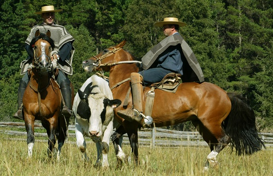
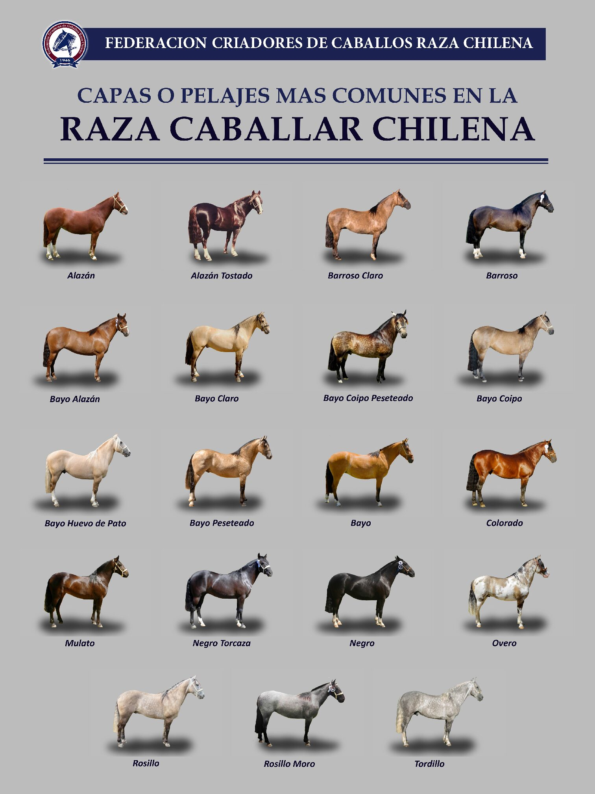

Detalles
La belleza del caballo chileno es a toda prueba, su majestuosidad y características Morfológicas lo hacen muy diferentes a otros, es un tipo de caballo dócil, manso, resistente y ágil, a lo que hay que agregar su valentía e inteligencia.
Es utilizado para diversas actividades ganaderas, como para arrear ganado. Debido a su mediana alzada es especial para la práctica del rodeo chileno.
 